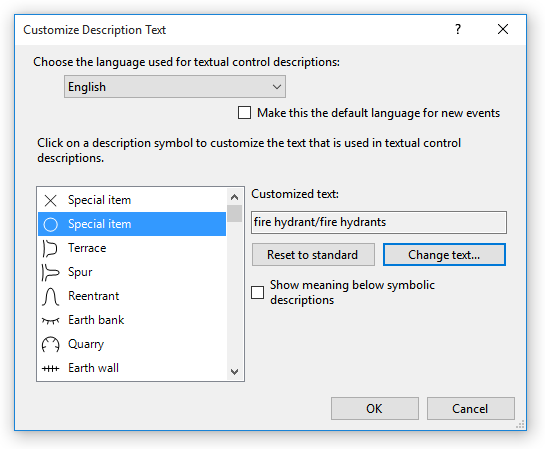
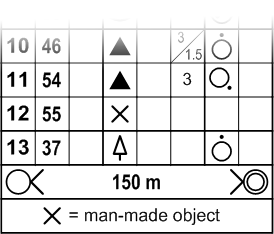

Event/Customize Descriptions
Displays a dialog that allows customizing the text that appears in textual control descriptions.

To change the language used for textual control description, choose one of the available languages from the drop-down list at the top.
If you check "Make this the default language for new events", then this language will be used for textual control descriptions in all newly created events.
To change the text associated with a particular symbol, first select the symbol in the list box on the left. Then, select "Change text..." on the right. Purple Pen will use this text when construction the textual description for any control that uses that symbol. Click "Reset to standard" to reset the text back to the standard for the selected language.
If you check the option "Show meaning below symbol descriptions", then Purple Pen will display the meaning of the symbol at the bottom of any symbolic description sheet that includes that symbol. This is most useful when using the symbols for special items.
